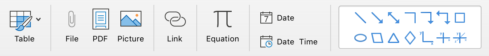

An essential part of note taking includes images, audio, video, etc. Together, they are classified as Multimedia. Multimedia (MM) is content that utilizes a combination of different media formats, or content forms, such as text, audio, video, images, animations, and interactive parts. The introduction of multimedia within your notes will enable you to enrich them and increase their overall quality.

Perhaps the most important aspect of multimedia is adding images. There are 3 ways to add images to OneNote: 1; dragging it in from a desktop, folder, or browser, 2; pasting images from your clipboard, and 3; inserting them from the OneNote Insert tab.
To increase the efficiency of your notetaking, OneNote allows you to directly drag images from your browser into your OneNote window rather than saving it. You can also use the standard copy-paste functions of your computer to bring the images to OneNote.
To do so, you would right-click (or Control+Click on Mac) and click Copy. Then, in your OneNote Window, you would click Ctrl+V (or Cmd+V on Mac), pasting the image into the OneNote window.
If your desired image has already been saved to your computer, to insert it you would navigate to the OneNote Insert tab, click Pictures, and then From File. A file manager window will pop up, allowing you to browse the content of your computer. Here, you can locate the image and directly insert into your page.
The procedure for inserting files is the same as inserting saved images. However, you are also able to drag and upload them, as well as use the standard copy-paste functions of your computer.
To incorporate notes into your note-taking, you would first have to copy the URL from your browser search bar. Then, to insert the link you would first select some text and navigate to the Insert Tab. Here, you would locate the “Link” button and click it. A small popup will appear, and it is here where you will paste the URL. It will also allow you to set the display text, which is what you will have to click to be redirected to the URL.
Another neat thing you can do to enhance your note-taking experience is to insert a PDF file. To do so, simply navigate to your Insert tab and click PDF. A file explorer window will pop up. Select your PDF file and click Insert. Your PDF file will be inserted, with all its pages, in your notebook.